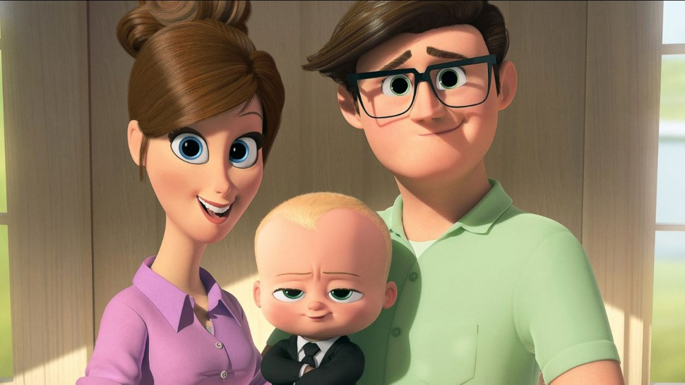

About Boss Baby
Boss Baby" features a suit-wearing infant on a mission to stop Puppy Co. It explores sibling rivalry and the humorous clash of baby and adult behavior.
Boss Baby and his Family!
Boss Baby's Chracteristicks
- Well-Dressed: The Boss Baby is always impeccably dressed in a suit, complete with a tie and briefcase, which sets him apart from other babies.
- Adult-like Behavior: He exhibits highly mature and adult-like behavior, often making decisions and giving orders like a seasoned executive.
- Intelligence: The Boss Baby is incredibly intelligent and resourceful, using his wit and cunning to solve problems and achieve his missions.
- Leadership Skills: He possesses strong leadership qualities, rallying other babies to work together and achieve their goals.
- Confident: The Boss Baby exudes confidence and charisma, which helps him navigate through various challenges.
Boss Baby's Family Members:
The Templeton family is a close-knit unit, navigating the joys and challenges of sibling rivalry while learning valuable lessons about love and cooperation. With Mom and Dad's unwavering support, they create a heartwarming family dynamic at the center of "Boss Baby" adventures. Click on the links below to read more about it